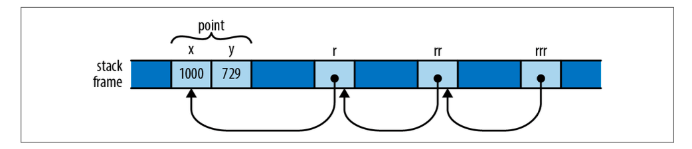
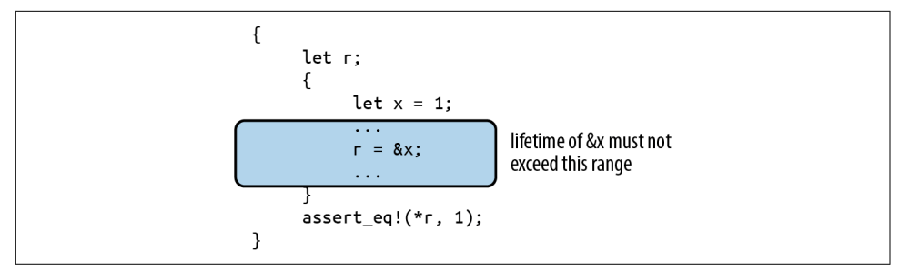
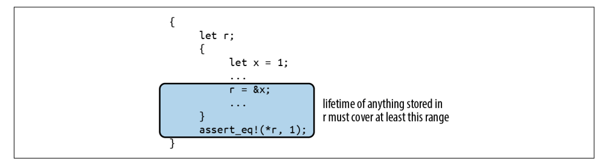
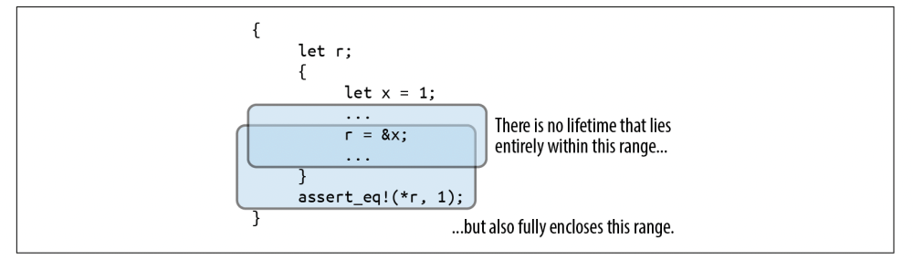
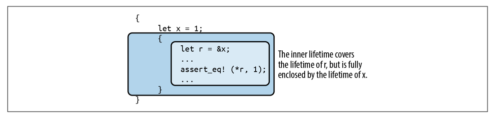

【Rust】引用
在 Rust 中，指针按是否有所有权属性可以分为两类，例如 Box<T>，String，或者 Vec 具有所有权属性的指针（owning pointers），可以说它们拥有指向的内存，当它们被删除时，指向的内存也会被被释放掉。但是，也有一种非所有权指针，叫做引用(references)，它们的存在不会影响指向值的生命周期，在 Rust 中创建引用的行为称之为对值的借用。
要注意的是，引用决不能超过其引用的值的生命周期。必须在代码中明确指出，任何引用都不可能超过它所指向的值的寿命。为了强调这一点，Rust 将创建对某个值的引用称为借用：你所借的东西，最终必须归还给它的所有者。
引用值
在《【Rust】所有权》章节中，我们说到函数传值会转移值得所有权，for 循环也会，例如，对下面的代码，我们在将 table 传递给 show 函数之后，table 就处于未初始化状态：
1 | use std::collections::HashMap; |
如果在 show 函数之后，我们再想使用 table 变量就会报错，例如：
1 | ... |
Rust 编译器提示变量 table 已经不可用，show 函数的调用已经转移 table 的所有权：
error[E0382]: borrow of moved value: `table`
--> src/main.rs:24:16
|
13 | let mut table = Table::new();
| --------- move occurs because `table` has type `HashMap<String, Vec<String>>`, which does not implement the `Copy` trait
...
23 | show(table);
| ----- value moved here
24 | assert_eq!(table["Gesualdo"][0], "many madrigals");
| ^^^^^ value borrowed here after move
正确处理这个问题的方法是使用引用，使用引用不会改变值的所有者，引用有两种类型：
-
shared reference：可以读引用的值，但不能改变它。而且同时可以有多个shared reference。表达式&e会生成e的shared reference。如果e的类型是T，那么&e的类型是&T，读作ref T，shared reference是可以复制的；共享引用借用的值是只读的，在共享引用的整个生命周期中，它的引用对象或从该引用对象可到达的任何东西都不能被改变，就像加了读锁，被冻结了； -
mutable reference：可读可写所引用的值，不能拥有其他任何shared reference或者mutable reference。表达式&mut e生成e的mutable reference。如果e的类型是T，那么&mut e的类型是&mut T，读作ref mute T。mutable reference是不可以复制的。可变引用借用的值只能通过该引用访问，在可变引用的整个生命周期中，没有其他可用路径可以到达其引用对象；
因此，我们可以对上面的 show 函数作如下修改，就可以使得代码编译通过。在 show 函数中，table 的类型是 &Table，那么 artist 和 works 的类型就是 &String 和 &Vec<String>，内部的 for 循环中 work 的类型也就变成了 &String。
1 | use std::collections::HashMap; |
现在，如果我们 table 中的值进行排序，shared reference 肯定不能满足要求，因为它不允许改变值，所以我们需要一个 mutable reference。可变借用使得 sort_works 有能力读和修改 works。
1 | fn sort_works(table: &mut Table) { |
当我们将一个值传递给函数时，可以说是将值的所有权转移给了函数，称之为按值传参。但是，如果我们将引用传给函数，我们可以称之为按引用传参，它没有改变值的所有权，只是借用了值。
解引用
在 Rust 中，我们可以通过 & 或者 &mut 创建 shared reference 或者 mutable reference，在机器级别，它们就是个地址。解引用可以通过 * 操作符。
1 | fn main() { |
如果每次访问引用指向的值，都需要 * 操作符，在访问结构体字段的时候，不难想象，体验有点糟糕。所在，在Rust中，可以通过.操作符隐式地解引用它的左操作数。
1 | fn main() { |
除此之外，.操作符还可以隐式地从它的左操作数创建引用，因此下面两个操作使等价的：
1 | fn main() { |
引用更新
在 C++ 中，一旦一个引用被初始化，是不能更改其指向的。但是在 Rust 中是完全允许的，例如下面的代码中，一开始 r 借用了 x，后面又借用了 y：
1 | fn main() { |
引用的引用
在 C 语言中我们经常听到指向指针的指针，在 Rust 中也是允许的，如下所示，为了清晰，我们写出了每个变量的类型，实际上我们完全可以省略，由 Rust 来推断。
1 | fn main() { |
然而，. 操作符可以一直向前寻找，直到找到最终的值。这些变量在内存中的分布如下图所示：

引用比较
同 . 操作符一样，比较运算符也有这样的效果，能连续解引用直到找到最终的值，例如：
1 | fn main() { |
这在大多数情况下应该是我们想要的效果，但是如果我们确实想知道两个引用它们指向的内存地址是否相同，我们可以使用 std::ptr::eq，仅仅比较地址而不是指向的值：
1 | assert_eq!(rx, ry); |
但是，无论如何，比较操作符左右两侧的操作数必须要有相同的类型，例如，下面的代码编译失败：
1 | assert!(rx == rrx); // error: type mismatch: `&i32` vs `&&i32` |
引用永不为空
Rust 中的引用永远不会为空。没有类似于C的NULL或C++的nullptr。引用没有默认初始值（因为任何变量在初始化之前，无论其类型如何，都不能使用），Rust 不会将整数转换为引用（安全代码中），因此无法将0转换为引用。
C 和 C++ 代码中使用空指针表示没有值，例如，malloc 函数要么返回一个指向内存块的指针，要么返回 null 表示内存申请失败。
在 Rust 中，如果你需要用一个值表示引用某个变量的内存，或者没有，可以使用 Option<&T>。在机器层面，Rust将其表示为代表空指针的None或者Some(r)，其中r是&T值，表示为非零地址，因此Option<&T>与C或C++中的可空指针一样有效，但是它更安全：Option类型要求在使用它之前检查它是否为None。
从任何表达式借用引用
在C、C++或者其他大多数语言中，我们都是从变量获取引用，也就是 & 运算符后面一般都是紧跟某个变量。但是在 Rust 中，我们可以从任何表达式借用引用：
1 | fn main() { |
这种情况下，Rust 会创建一个持有表达式值的匿名变量，然后再从匿名变量创建一个引用。匿名表达式的生命周期取决于我们怎么使用这个引用：
-
如果我们是将这个引用用在赋值语句
let，结构体字段或者数组中，那么这个匿名变量的生命周期和我们let语句初始化的变量一样，例如上面的r； -
否则，这个匿名变量在当前语句结束就会被释放掉，例如上面为
1009创建的匿名变量在assert_eq!结束就会被丢掉；
胖指针
胖指针，即 fat pointers，指哪些不仅仅是包含了地址的指针，就像 &[T]，引用自 slice 的指针除了包含首元素的地址之外，还包括 slice 的数量；
另一种胖指针是 trait 类型，详细请看 Trait 对象。
引用安全性
截止到目前为止，我们看到的指针都和C中差不多，但是既然这样，我们又如何保证安全性呢？为了保证引用使用的安全性，Rust 为每个应用都会分配一个生命周期，更多请看【Rust】生命周期。
引用局部变量
如果我们引用的是一个局部变量，并且我们的引用比局部变量的作用域更大，也就是局部变量释放了之后，我们的程序会如何，来看下面的示例：
1 | fn main() { |
这段代码编译会失败的，编译器提示：我们引用的值没有引用活得久，因为 x 在内部的括号之后就被释放了，导致 r 成了一个悬垂指针：
error[E0597]: `x` does not live long enough
--> src/main.rs:5:13
|
5 | r = &x;
| ^^ borrowed value does not live long enough
6 | }
| - `x` dropped here while still borrowed
7 | assert_eq!(*r, 1);
| ----------------- borrow later used here
Rust 编译器是如何确保每个引用都是有效的呢？ Rust 为每个引用都赋予了一个满足其使用范围的 生命周期。生命周期是程序的一部分，可以被安全地用于语句，表达式或者变量。但是生命周期完全是Rust编译时虚构的。在运行时，引用只不过是一个地址，其生命周期是其类型的一部分，没有运行时表示。
在上面的例子中，有三个生命周期，变量 x和 r 的生命周期是从它们初始化到编译器认为它们不再使用为止。第三个生命周期是一个引用类型，我们引用自x并且存储在 r 中。
正如我们上面看到的，生命周期有一个很明显的约束，就是它不能比它引用的值活的久。因为如果这里 x 出了内部的括号，就会被释放，所有来自于它的引用都会变成一个悬垂指针，所以，Rust 规定 约束1：值的生命周期必须大于它的引用的生命周期，上面的示例中，x的生命周期就小于它的引用的生命周期：

还有另外一个约束，约束2：如果我们将引用存储在一个变量中，那么这个引用必须要覆盖这个变量的整个生命周期，从它的初始化到最后一次使用为止。上面示例中，x 引用的生命周期没有覆盖到r的使用范围：

第一个约束限制了生命周期的上限，也就是它最大是多大；第二个约束限制了它的下限，也就是它最小应该是多少；Rust 的编译器必须能找到一个能满足所有约束的生命周期，也就是从上限开始到下限为止。然而遗憾的是，我们的示例中，没有这样的生命周期，所以编译失败：

对于我们上面的示例，稍作修改，就可以找到满足的生命周期：
1 | fn main() { |
此时 x 引用的生命周期满足我们的使用：

更新全局引用变量
当我们传递一个引用给函数时，Rust 如何保证安全使用呢？假设我们有一个函数 f，接受一个引用作为参数，并且把它存储在全局变量中，例如：
1 | // 不能编译 |
Rust 的全局变量时静态创建的，贯穿应用程序的整个生命周期。像任何其他声明一样，Rust的模块系统控制静态变量在什么地方可见，所以它们仅仅是在生命周期里是全局的，而不是可见性。上面的代码是有一些问题的，没有遵循两个规则：
-
所有的静态变量必须被初始化；
-
可变的静态变量不是线程安全的，因为任何线程任何时候都可以访问静态变量，即使单线程也会引发某些未知的异常；出于这些原因，我们需要放在
unsafe块中才能访问全局可变静态变量；
根据这两个规则，我们将上面的代码改成下面这个样子：
1 | static mut STASH: &i32 = &128; |
为了让代码更加完善，我们需要手动函数参数的生命周期，这里 'a 读作 tick A，我们将 <'a> 读作 for any lifetime 'a。所以下面的代码定义了一个接受具有任意生命周期 'a 参数 p 的函数 f：
1 | fn f<'a>(p: &'a i32) { ... } |
由于 STASH 的生命周期和应用程序一样，所以我们必须赋予它一个具有相同生命周期的引用，Rust 将这种生命周期称之为 'static lifetime，静态生命周期，所以如果参数的 p 的声明是 'a，是不允许的。编译器直接拒绝编译我们的代码：
error[E0312]: lifetime of reference outlives lifetime of borrowed content...
--> src/main.rs:5:16
|
5 | STASH = p;
| ^
|
= note: ...the reference is valid for the static lifetime...
note: ...but the borrowed content is only valid for the lifetime `'a` as defined here
编译器的提示很明显，f 需要一个具有静态生命周期的参数 p，因此我们现在可以将代码修改成如下的样子：
1 | static mut STASH: &i32 = &128; |
从一开始的 f(p: &i32) 到结束时的 f(p: &'static i32)，如果不在函数的签名中反映该意图，我们就无法编写一个将引用固定在全局变量中的函数，我们必须指出引用的生命周期，满足约束2：如果我们将引用存储在一个变量中，那么这个引用必须要覆盖这个变量的整个生命周期，从它的初始化到最后一次使用为止。